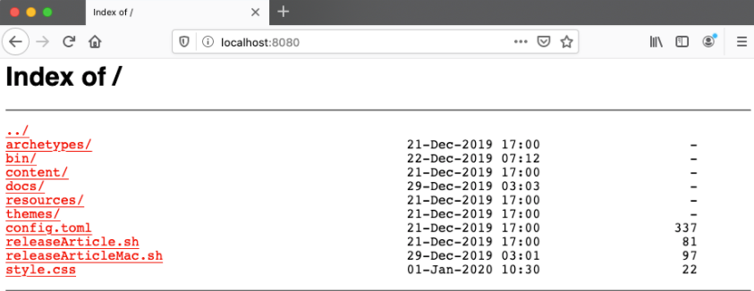
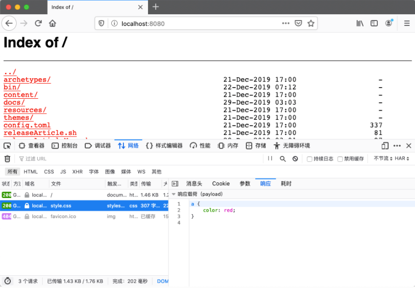

除了在 HTML 文档中 使用 Link 来加载 CSS 外，其实还可以使用 HttpHeader 中的 Link 字段：
Link: </style.css>; rel=stylesheet;type=text/css
这个功能在一些不容易更改 html 内容的情况下，非常有用。可以通过 server 端，添加该 http header 来加载外部的 CSS，比如在 nginx 配置文件中使用如下 add_header 配置，就可以实现加载自定义的 CSS，从而达到定义 nginx 的 autoindex 页面外观的效果
location / {
root /Users/bzhu/quickstart;
autoindex on;
add_header Link "</style.css>; rel=stylesheet;type=text/css";
}
加入 style.css 内容如下：
a {
color: red
}
可以实现如下的效果，链接的颜色有默认的蓝色，变成了红色

同时可以观察到，浏览器加载了对应的 CSS：

遗憾的是Chrome 还不支持该功能：
https://bugs.chromium.org/p/chromium/issues/detail?id=120104
https://bugs.chromium.org/p/chromium/issues/detail?id=58456
https://bugs.chromium.org/p/chromium/issues/detail?id=692359